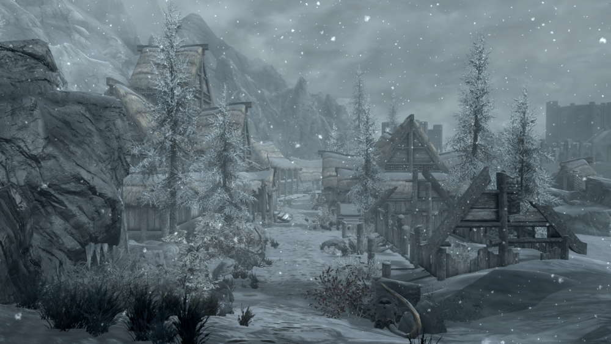
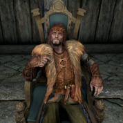
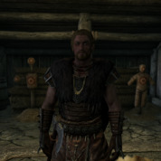
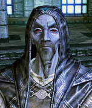
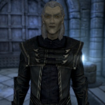
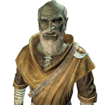
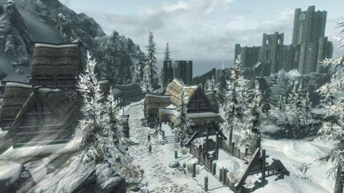
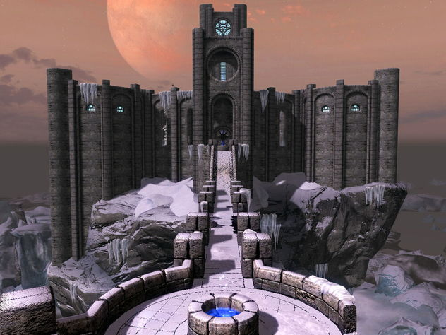
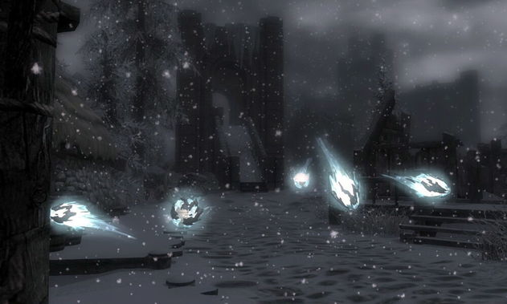

"Мы — единственная оставшаяся группа в Скайриме, изучающая тайные искусства. Есть, конечно, и другие учёные, но они работают поодиночке и часто вынуждены скрываться" —Коллегия Винтерхолда

Винтерхолд — город с насыщенной и сложной историей. В далёком прошлом был первой столицей Скайрима, что делало его важным торговым и культурным центром. Именно в те золотые для города годы возле него была основана Коллегия Винтерхолда. Судьбоносным (и наиболее ужасным) событием для города стал Великий обвал, произошедший в 4Э 122. Чудовищный шторм, бушевавший несколько дней подряд и сопровождавшийся цунами, вызвал обвал большого участка берегового скального массива вместе с основной частью располагавшегося на нём Винтерхолда. После этой катастрофы от некогда великого города осталось лишь несколько зданий, расположенных вдоль единственной уцелевшей улицы.Совершенно загадочным образом здание Коллегии практически не пострадало. Это вызвало закономерные подозрения о причинах обвала. Сами маги всячески отрицали свою причастность к трагедии, в итоге их вина так и не была доказана. Однако отголоски возникшего недоверия к магии проявляются и по сей день.Географически Винтерхолд расположен на северо-восточном побережье Скайрима, в пустынной и неприветливой местности, удаленной от основных торговых маршрутов. От окончательного упадка и забвения его, по иронии судьбы, спасает лишь Коллегия, предоставляющая магические услуги желающим и обучение начинающим магам, но даже это не изменяет отрицательного к ней отношения со стороны большинства жителей городка. Нынешним правителем города является ярл Корир.
Оказавшись впервые в городе, Драконорождённый становится свидетелем казни Роггвира за измену Империи — он открыл ворота и выпустил Ульфрика Буревестника из города после убийства верховного короля Торуга. Многие жители впоследствии вспоминают эту казнь. Здесь Довакин может вступить в ряды Имперского легиона. В Мрачном замке присягу примут лично генерал Туллий и его помощница — легат Рикке. Так как Мрачный замок является штаб-квартирой Имперского легиона в Скайриме, то все задания Довакин будет получать именно тут, также сюда придётся возвращаться с отчётами после выполнения приказов генерала. Если же события гражданской войны развиваются благоприятно для восставших, то город подвергнется штурму Братьев Бури, и Довакин вместе с Ульфриком Буревестником и его «правой рукой», Галмаром Каменный Кулак, захватят город и произведут штурм Мрачного замка, где состоится финальная битва с генералом Туллием и легатом Рикке с последующей казнью генерала (Рикке погибает в бою).
Администрация | |
Длинный дом ярла | |
| Ярл Корир | Кай Взмыленная Лука |
|  |  |
Гильдии | |
| Коллегия Винтерхолда | |
| Савос Арен — архимаг | Анкано — советник архимага |
|  |  |
| Ураг гро-Шуб — библиотекарь, торговец книгами | |
|  | |
| / |  |  |
| Главная улица | Коллегия | "призраки" в одном из квестов |